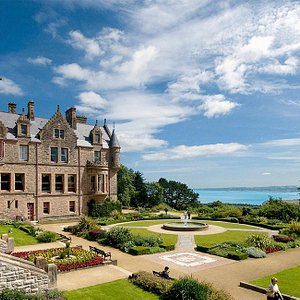

El territorio del Reino Unido se encuentra conformado por Inglaterra, Escocia, Gales e Irlanda del Norte. Como una de las grandes potencias de la historia mundial ha sido protagonista de los principales acontecimientos históricos y su desarrollo se encuentra registrado en los numerosos museos que se pueden visitar allí.
Lugares para visitar:
 Londres
Londres Edimburgo
Edimburgo- Belfast
 Glasgow
Glasgow
Itinerario:
En 5 dias y 4 noches en londres se puede visitar Convent Garden, ir a comprar en Oxford Street, conocer el palacio de Buckingham, probar algo en el Borough Market, visitar el Big Ben y el palacio de Westminster, subir a los barcos que van de Westminster a la torre de londres, concoer el museo de historia natural, ir a comer y tomar una copa en the shard y disfrutar una obra en el west end.
Costos de viaje:
- Hotel estadia completa -> $410
- Comidas externas por dia -> $75
- Traslados por dia -> $17
- Ingresos y actividades -> $80
- Costos adicionales -> $40